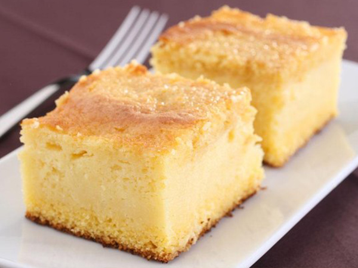

Bolo de Fubá Cremoso
Essa receita é muito boa mesmo!!!

INGREDIENTES
- 4 ovos
- 4 xícaras de leite
- 3 colheres de farinha de trigo
- 1 xícara e meia de fubá
- 2 colheres de margarina
- 100g de queijo ralado
- 1 colher de fermento em pó
MODO DE PREPARO
- Coloque tudo no liquidificador e bata
- Por alguns segundos coloque em forma untada e polvilhada com farinha de trigo
- Asse em forno quente por 30 a 40 minutos
- Quando for tirar do forno observe se ele está corado, pois ele fica meio mole
- Mas só sirva bem frio